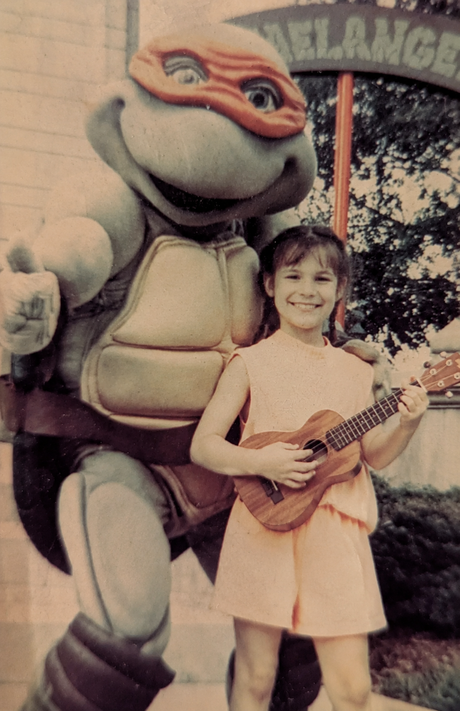

01
Uma vida conectada à música
Desde os 10 anos, Marina Valença toca diferentes instrumentos por paixão. Com o passar dos anos, conheceu de perto as tensões e os desconfortos que podem surgir após longas práticas e ensaios.